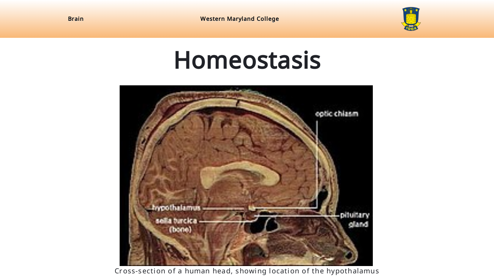

The increasing amount of slide presentations in various sectors has amplified the need for effective slide layout and semantic analysis. However, we found that current slide datasets contain inconsistencies, mislabels, and incomplete annotations. Using them as a basis for developing deep learning-based slide analysis models could lead to models that are not robust and suboptimal. Addressing these challenges, we introduce SlideCraft, a tool for creating synthetic slide datasets that imitate real-world presentations. This tool overcomes the drawbacks of existing datasets by allowing users to create balanced, diverse, and accurately annotated slide data. We demonstrate SlideCraft's efficacy in enhancing slide layout analysis algorithms, focusing on its capability to improve dataset quality and object detection performance.
BibTex Code Here